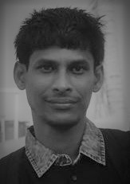

|  |
Sk. Arif Ahmed, Ph.DPostdoc, Department of Physics and Technology, University of Tromsظ, Norway |
 https://orcid.org/0000-0003-0706-2565
https://orcid.org/0000-0003-0706-2565About Me
Arif Ahmed is a Post Doctoral Research Fellow with Krishna Agarwal in the Department of Physics and Technology at the University of Tromsø (UiT), Norway. From 2009 to 2019, he was an Assistant Professor of Computer Application at Haldia Institute of Technology, India. He holds invited position as Research Consultant in Imaging Media Research Center at Korea Institute of Sciece and Technology (KIST), Korea and in School of Electrical Sciences IIT Bhubaneswar, India.
Arif completed his Ph.D. at National Institute of Technology Durgapur, India and his undergraduate studies at Burdwan University. His research interests lie in the area of Computer Vision and Artificial Intelligence, ranging from theory to design to implementation. He has collaborated actively with researchers in several other disciplines of computer science, physics, biology particularly computer vision application on problems at the multi disciplinary environment.
Arif has served on roughly 15 conference and workshop program committees and served as the Organizing Chair for ICITAM 2017, Publication Chair in ICITAM 2019. He has served on the ICMC 2013, 2015, and 2019 as Organizing Member. He is a member of IEEE and Digital Life Norway (DLN).
Arif completed his Ph.D. at National Institute of Technology Durgapur, India and his undergraduate studies at Burdwan University. His research interests lie in the area of Computer Vision and Artificial Intelligence, ranging from theory to design to implementation. He has collaborated actively with researchers in several other disciplines of computer science, physics, biology particularly computer vision application on problems at the multi disciplinary environment.
Arif has served on roughly 15 conference and workshop program committees and served as the Organizing Chair for ICITAM 2017, Publication Chair in ICITAM 2019. He has served on the ICMC 2013, 2015, and 2019 as Organizing Member. He is a member of IEEE and Digital Life Norway (DLN).
News
- Feb'21, Accepted !!! S. W. Jun, A. A. Sekh, C. Quek and D. K. Prasad, seMLP: Self-Evolving Multi-Layer Perceptron in Stock Trading Decision Making, SN Computer Science, Springer
- Feb'21, Accepted !!! Q. Zhe, A. A. Sekh, C. Quek and D. K. Prasad, Recurrent Self-evolving Takagi-Sugeno-Kan Fuzzy Neural Network (RST-FNN) based Type-2 Diabetic Modeling, The Fourth International Conference on Intelligence Science (ICIS2020), India
- Feb'21, Accepted !!! S. Mandal, A. A. Sk and S. K. Naskar, Identification of Relevant Quantities in Arithmetic Word Problems using Siamese Neural Network, 7th International Conference on Mathematics and Computing ICMC 2021, India
- Jan'21, Accepted !!! A. Somani, A. A Sekh, I-S. Opstad, AB Birgisdottir, T Myrmel, BS Ahluwalia, K Agarwal, Dilip K Prasad, A. Horsch, Digital Staining of Mitochondria in Label-free Live-cell Microscopy, Bildverarbeitung für die Medizin - Algorithmen System Anwendungen – 2021, Germany
- Jan'21, Accepted !!! M. Islam, S. Joardar, A. A. Sekh, RingFIR: A large volume earring dataset for fashion image retrieval, Fifth IAPR International Conference on Computer Vision & Image Processing (CVIP 2020), India
- Jan'21, Accepted !!! S. Das, S. Kar, A. A. Sekh, A large volume dataset for grading tomato freshness quality, The Fifth IAPR International Conference on Computer Vision & Image Processing (CVIP 2020), India
Activities
- PC Member PATTERNS 2021, The Thirteenth International Conference on Pervasive Patterns and Applications , Portugal
- PC Member The Fourth International Conference on Intelligence Science (ICIS2020), India
- PC Member MICMED - PAKDD 2021 Workshop on Machine Intelligence Coinciding with Data Mining Applications in Biology and Medicine, Dubai
- PC Member 7th International Conference on Mathematics and Computing ICMC 2021, India